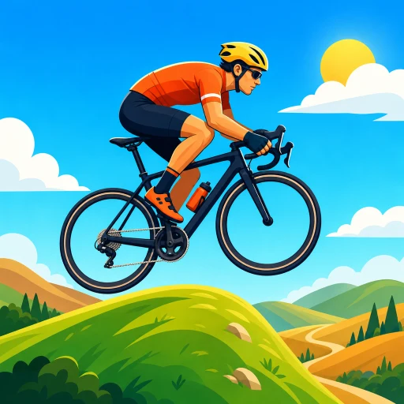
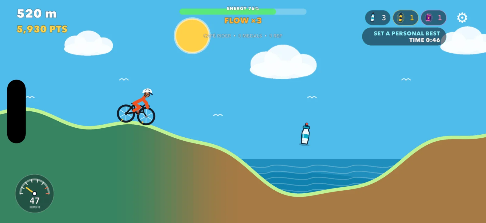
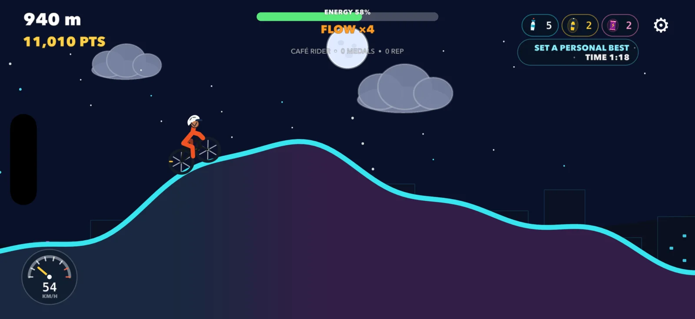
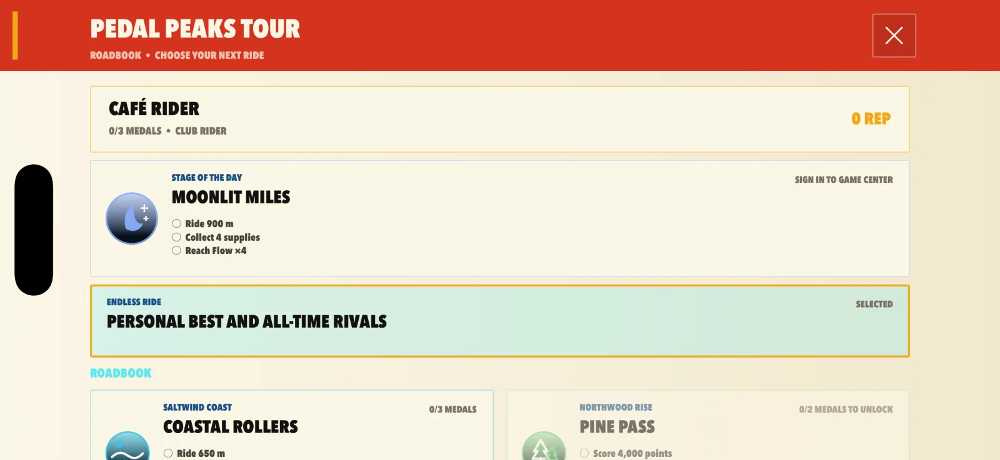
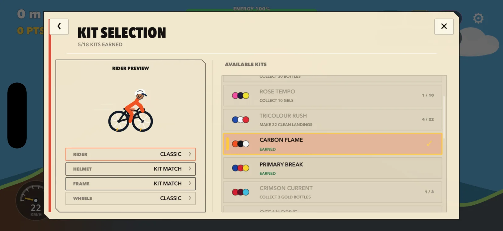

Ride the rhythm.
Carry the speed.
Pedal Peaks turns every rolling hill into a small decision. Dive into the descent, release at the crest, and match the landing to keep your run alive.
- Quick to learnBuilt for touch
- Hard to perfectEvery crest counts
- Fair competitionCosmetics only


One thumb. A lot of road.
Find the fastest line through every hill.
Speed is earned, not handed out. The terrain gives you everything you need—you just have to read it at the right moment.
-
01
Dive
Press into a descent to tuck, build speed, and turn gravity into momentum.
-
02
Launch
Release at the crest to leave the ground cleanly—or double tap for a quick bunny hop.
-
03
Land
Match the next slope, keep your Flow multiplier, and carry speed into the next climb.
The road keeps changing
Sun, rain, moonlight—and one more crest.
Dynamic weather and a full day-and-night cycle give each run its own atmosphere. The handling stays honest while the world rolls by.


Come back with a target
Your next ride is already waiting.
Take on themed Tour stages, tackle a fresh daily route, chase medals, and compare your best points and distances through Game Center.
- ✓ Stage objectives and career progression
- ✓ Personal-best ghosts and rival markers
- ✓ Daily and all-time leaderboards
Look fast. Ride clean.
Build a bike and kit that feel like yours.
Unlock team-inspired kits, helmet colours, frame finishes, wheel styles, and glowing neon bikes. Purchasable items are cosmetic only—no suspicious injections, no bought watts.

The hills are ready